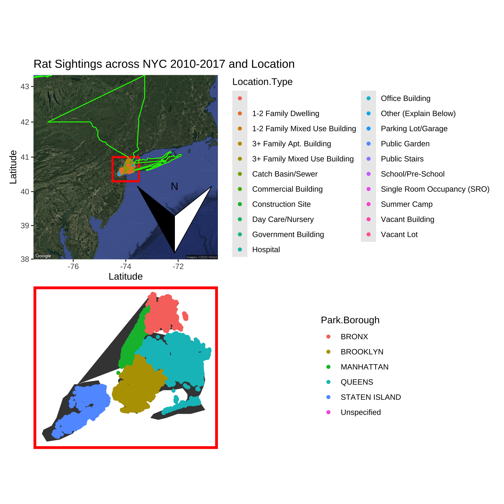
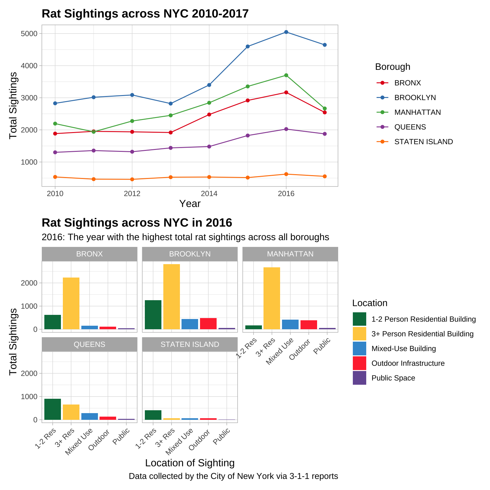

library(tidyverse)
library(here)
library(dplyr)
library(maps)
library(mapdata)
library(mapproj)
library(ggmap)
library(ggspatial)
library(ggplot2)
library(emojifont)
library(lubridate)
library(patchwork)
library(ggrepel)
library(awtools)
library(jcolors)Good Plot Bad Plot🐀
Introduction
Let’s take a closer look at the NYC Rat Sightings Dataset produced by The City of New York! This dataset includes sightings of rats across all five boroughs as reported by the public to 3-1-1 in NYC from 2010-2017. We’re going to explore these sightings across the boroughs to answer the following questions:
- What borough had the highest number of rat sightings from 2010-2017?
- What types of locations do people report the highest sightings of NYC rats?

Set Up Libraries
Load data and take a look
After looking at the data, there are many columns with only NA or Unspecified as the values. Let’s remove those!
## Load data ######
ratsnyc <- read.csv(here("GoodPlotBadPlot", "Data","Rat_Sightings.csv"))
## Clean data ###
ratsnyc_cleaned <- ratsnyc %>%
select(where(~!all(is.na(.))), #remove columns where all values are NA
-starts_with("School")) #remove columns that begin with "School" because all values are UnspecifiedBAD RATS ALERT!!
Wouldn’t it be great to be able to see every single location where a rat has ever been seen? I personally must know this information.
## Let's overlay the border of NY state on our map because how else will we know where NY is ##
ny_border <- map_data("state", region = "new york") #make a df to plot the border of ny from mapdata library
geocode("NYC") #find the coordinates for NYC to center map# A tibble: 1 × 2
lon lat
<dbl> <dbl>
1 -74.0 40.7nycmap <- get_map(location = c(lon = -74.00597, lat = 40.71278), #use the output from the nyc geocode
zoom = 7, #3 is continent level, 20 is singular building
maptype = "satellite") #choose the base layer image
## Our bad plot #########
NY <- ggmap(nycmap) + #center map on the coords
geom_rect(aes(xmin = -74.5, xmax = -73.5, #place a rectangle and determine x axis values
ymin = 40.3, ymax = 41), #place a rectangle and determine y axis values
color = "red", #an extremely noticeable border color!
linewidth = 1, #line thickness of border
fill = NA) + #no fill to see plot
geom_polygon(data = ny_border, #data for border of NY state
aes(x = long, y = lat), #place border x and y axis
color = "green", #the ugliest border color for our state
fill = NA, #no fill to see plot
linewidth = 0.5) + #adjust thickness of line
coord_map(projection = "mercator") + #determine the map projection
geom_point(data = ratsnyc_cleaned, #add coordinates
aes(x = Longitude,
y = Latitude,
color = Location.Type)) + #color of points dependent on location type
annotation_north_arrow(location = "br", #north arrow to bottom right
height = unit(3, "cm"), #I love a HUGE north arrow
width = unit(3, "cm"),
rotation = 180) + #rotate the north arrow because we feel like it!
labs(title="Rat Sightings across NYC 2010-2017 and Location",
x = "Latitude", #x-axis label
y = "Latitude") #y-axis label. Why can't both axes be latitude? fun!Take a closer look at the locations!
nycmapdata <- map_data("county") %>% #create a df containing the boroughs, select data from county
filter(region == "new york") %>% #filter by state
filter(subregion %in% c("bronx", "kings", "new york", "queens", "richmond")) #filter by specific counties in nyc
NYC <- ggplot() +
geom_polygon(data = nycmapdata, #use df with information on the boroughs
aes(x = long, y = lat)) + #assign x and y axis
coord_map(projection = "gilbert") + #choose projection
theme_void() + #the best theme is one that shows us no coordinates of course
geom_point(data = ratsnyc_cleaned, # add a point at all my sites
aes(x = Longitude,
y = Latitude,
color = Park.Borough)) +
theme(panel.border = element_rect(color = "red",
fill = NA,
linewidth = 3))THE PLOTS ARE BAD
Well this was really great! Let’s look at a HORRIFIC plot
BadPlot <- NY/NYC #place plots on top of each other
ggsave(here("GoodPlotBadPlot","Output","BadPlot.png"),width=7,height=7)
BadPlot
Why is our plot so ugly?
- It seems we are unaware of aes(group = group)
- It is impossible to distinguish the points plotted based on location type
- Why are we plotting every single sighting of a rat at any point in time between 2010-2017?
- Love a giant north arrow pointing south and incorrect labeling of axes or lack of labeling
- What is the purpose of color = Park.Borough? This tells us nothing
- The legends are extremely messy with too much information. It is not clear what the purpose of ‘Unspecified’ is in the bottom plot, or why there is a blank value for the top legend.
Time for a GOOOOOD plot! Clean the Data
ratsnyc_cleaned$Location.Type has 20 unique values, which crowds up our plots. Let’s combine location types to create five concise categories instead of 20. We also don’t need to look at every specific date of each rat sighting throughout the years - instead, we can extract and create a column for the year of the sighting.
ratsgoodplot <- ratsnyc_cleaned %>%
mutate(Created.Date = mdy_hms(Created.Date), #ISO date
Year = year(Created.Date), #create a column only for year
) %>% #create a column only for year
filter(Park.Borough != "Unspecified") %>% #exclude rows where Park.Borough is Unspecified
mutate(Combined.Sightings = case_when( #create a column called Combined.Sightings for the five concise categories
Location.Type %in% c("1-2 Family Dwelling", "1-2 Family Mixed Use Building",
"Single Room Occupancy (SRO)") ~"1-2 Person Residential Building", #if value for location type includes any of the following in c(), assign to 1-2 person residential building
Location.Type %in% c("3+ Family Mixed Use Building","3+ Family Apt. Building") ~"3+ Person Residential Building", #assign location types to concise category
Location.Type %in% c("Construction Site", "Catch Basin/Sewer",
"Vacant Lot") ~"Outdoor Infrastructure", #assign location types to concise category
Location.Type %in% c("Parking Lot/Garage", "Public Stairs",
"Summer Camp", "Public Garden") ~"Public Space", #assign location types to concise category
Location.Type %in% c("Office Building", "Commercial Building", "School/Pre-School",
"Government Building", "Hospital", "Day Care/Nursery",
"Vacant Building") ~"Mixed-Use Building")) %>% #assign location types to concise category
drop_na() %>% #remove NA values; we do not have information on "Other(explain below)"
group_by(Year, Park.Borough, Combined.Sightings) %>% #group by year, borough, combined sightings to calculate summarise within desired categories
summarise(Total.Sightings = n()) #create column of total sightings that summarises sihtings across the year, borough, and combined.sightings
### We want a df to answer the question:What borough had the highest number of rat sightings from 2010-2017?###
ratsplot <- ratsgoodplot %>%
rename(Borough = Park.Borough) %>% #rename for better view on legend
group_by(Borough, Year) %>% #group by borough and year
summarise(Grand_Total_Sightings = sum(Total.Sightings)) #total sightings across individual year
## We want a df to answer the question: What types of locations do people report the highest sightings of NYC rats during the year where the most rats were recorded?###
rats2016 <- ratsgoodplot %>%
filter(Year == 2016) %>% #2016 had the highest sightings of rats across the boroughs
rename(Location = Combined.Sightings) #rename for better legend legibilityRat Plotting Time!!
Let’s plot the total rat sightings of each year from 2010-2017 and compare across the boroughs. It would also be great to take a closer look at the year that has the highest rat sightings to evaluate the types of locations that have high rat sightings.
## Let's plot the total rat sightings of each year from 2010-2017 and compare across the boroughs######
AllRatSightings <- ggplot(ratsplot,
aes(x = Year, #see how data changes with time
y = Grand_Total_Sightings, #total sightings per year
color = Borough)) + #color dependent on borough
scale_color_brewer(palette = "Set1") + #choose distinguishable colors
geom_point() + #add geometry
geom_line() + #add geometry
labs(title="Rat Sightings across NYC 2010-2017", #title
x="Year", #axis name
y="Total Sightings") + #axis name
theme_light() + #light theme for legibility
theme(plot.title = element_text(size = 14, face = "bold"), #make the title stand out
axis.title = element_text(size =12)) #axis title larger for easier read
###Rat sightings in 2016
Rats2016 <- ggplot(rats2016,
aes(x = Location, y = Total.Sightings, #assign axes
fill = Location)) + #fill column color based on location
geom_col() + #add geometry
scale_fill_manual(values = mpalette) + #add color palette
facet_wrap(~Park.Borough) + #compare across boroughs
labs(title="Rat Sightings across NYC in 2016",
subtitle = "2016: The year with the highest total rat sightings across all boroughs",
x="Location of Sighting",
y="Total Sightings",
caption="Data collected by the City of New York via 3-1-1 reports") +
theme_light() + #add visually peasing theme
theme(plot.title = element_text(size = 14, face = "bold"), #make title more visible
axis.title = element_text(size =12),
plot.caption = element_text(size = 10),
axis.text.x = element_text(angle = 45, #difficult to read text, rotate
hjust = 1)) +
scale_x_discrete(labels = c("1-2 Person Residential Building" = "1-2 Res", #shorten labels bc they are too long
"3+ Person Residential Building" = "3+ Res",
"Mixed-Use Building" = "Mixed Use",
"Outdoor Infrastructure" = "Outdoor ",
"Public Space" = "Public"))A MUCH BETTER PLOT
GoodPlot <- AllRatSightings/Rats2016
ggsave(here("GoodPlotBadPlot","Output","GoodPlot.png"))
GoodPlot
Why is our plot MUCH BETTER?
- Clear total number of sightings based on borough and year, unlike our bad plot where the coordinates of sightings were mixed across every year
- The plot is faceted by borough to make it easier to make side by side comparisons of sightings across the boroughs side
- Labeling, the legend, title, and axes are all clear to the reader due to choices with sizing, bolding, text rotation, and naming
- Choice of colors and themes for the plots allows us to visually distinguish the data